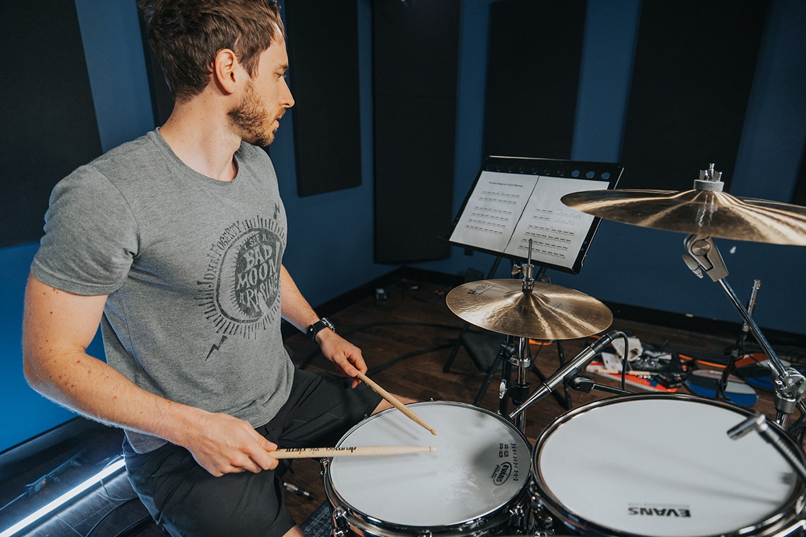
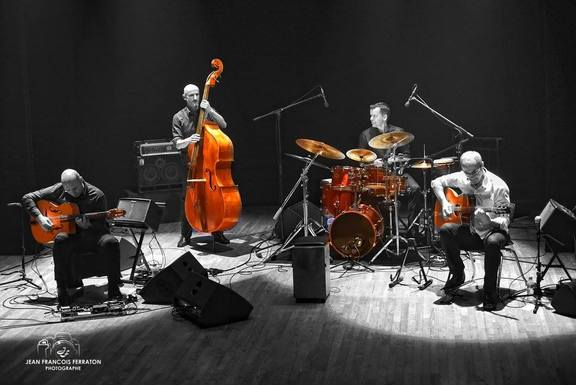

Apprendre à jouer de la batterie
Définie comm un ensemble d'instruments de percussion joués par un seul individu, la batterie compte plusieurs adeptes dans le monde. Sa popularité sexplique par le fait qu'elle a un rôle important qui consiste à donner le rythme. En effet, presque tous les groupes musicaux et ce, peu importe leur style de musique l'utilisent.
C'est une erreur de croire que jouer de la batterie est un jeu d'enfant. C'est une opération qui exige de la compétence. Dans le cas contraire, la batterie devient seulement une source de bruit. Ainsi, si vous voulez devenir batteur, un apprentissage s'impose.
Comment apprendre à jouer de la batterie ? Quelles sont les difficultés qui pourraient se présenter ?
1) Bien connaître son instrument pour commencer
Il est impossible de jouer de la batterie sans connaître ce qu'elle est réellement. Comme il a été indiqué auparavant, il s'agit d'un ensemble de percussions. En réalité, la batterie est née de l'association de 6 éléments que vous pouvez voir dans la partie Les Bases

2) La difficulté de l'apprentissage
La premiére question posée par les apprentis musiciens est : est-ce difficile de jouer de la batterie ? Pour les batteurs, la difficulté repose souvent au niveau de la coordination à la batterie. En effet, il ne faut pas oublier que c'est un ensemble de plusieurs caisses. Ainsi, vous avez besoin de vos deux mains et de vos deux pieds pour pouvoir produire le son dont vous voulez. Autant parfois pour le piano il est difficile de coordonner deux mains (indépendemment des notes de musique à jouer), on peut imaginer que coordonnées les mains et les pieds peut s'avérer compliquer pour certains.
Parfois, il faut utiliser tous vos membres de façon simultanée, ce qui n'a rien de simple. De plus, si vous êtes droitier, votre main et votre pied gauches pourront manquer d'habileté. Cela risque d'engendrer un retard de mouvement. Autrement dit, vous pourrez avoir du mal à respecter la rythmique. Or, en tant que batteur, vous êtes censé donner le rythme.
La première solution est d'apprendre à maîtriser et à contrôler l'usage de vos membres les plus maladroites. Ensuite, il faut commencer par la coordination à 2 membres. Cela consiste à jouer avec les caisses qui se contrôlent avec les deux pieds. Lorsque vous maîtrisez bien les mouvements tout en gardant le rythme, il faut ajouter la main gauche. Pour finir, lancez-vous dans la coordination à 4 membres.

3) Tableau des notes de batterie
| Nom | Abrévation | Représentation | |
|---|---|---|---|
| Anglais | Français | ||
| Ride cymbal | Cymbale Ride | RC |  |
| floor tom | Tom basse | FT |  |
| Bass Drum | Grosse Caisse | BD |  |
| Toms | HT / LT |  |
|
| Snare Drum | Caisse Claire | SD |  |
| Hi-hat | Charleston | HH |  |
4) Les styles de musique pour la batterie
Il faut savoir que la batterie vous offres la possibilité de jouer plusieurs sortent de musique. En effet cette dernière est la base du rythme de la musique en générale. Vous avez ainsi :
page 1